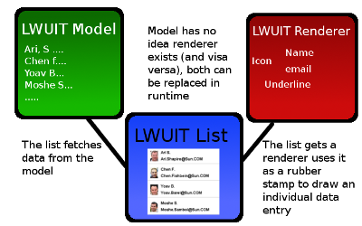

To create a list renderer you must first create a Container entry in the GUI builder and populate it with components.
A renderer is used to define how the information within the model (the data
of the list) is displayed to the user. A render in the GUI builder is a
Container that can have any set of components. Components that can contain
text and icons should normally have names matching entries within
the model (e.g. if the model has a key with a given name the renderer
component with the same name will display it). This diagram tries to
explain the relationship between the model, List and renderer:

To create a renderer value that doesn't change based on a key (e.g. a hardcoded application value) just append the word Fixed to the end of the component name when creating it.
The UIID (component style) of the renderer will match the UIID of the
container given here, notice that a focus style is also relevant to
a list (its the element appearing behind the selected entry) and that
element UIID bares the same name as the Container style with the word
Focus appended.
The renderer supports two major special cases: Fisheye and pinstipe.
The fisheye renderer allows using a separate container type to represent
the selected entry which can result in pretty unique UI's. The pinstripe
mode allows defining a separate look for odd/even rows in the list to
create an effect of pinstriping.